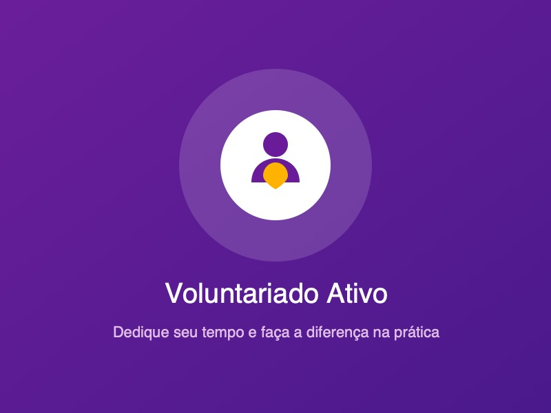

1. Resgate e Pronto Atendimento
Operação contínua de resgate emergencial com ambulatório equipado, internação e exames laboratoriais para animais feridos ou em risco iminente.
Trabalhamos diariamente em frentes integradas para garantir a dignidade e a recuperação de animais vulneráveis.
Operação contínua de resgate emergencial com ambulatório equipado, internação e exames laboratoriais para animais feridos ou em risco iminente.

Eventos mensais em espaços públicos e centros comerciais parceiros, promovendo o encontro seguro entre animais recuperados e novas famílias.

Unidade móvel cirúrgica que atende regiões periféricas com esterilização gratuita, evitando a reprodução desordenada e o abandono de ninhadas.

Palestras e oficinas educativas para crianças e adolescentes sobre guarda responsável, direitos dos animais e preservação ambiental.